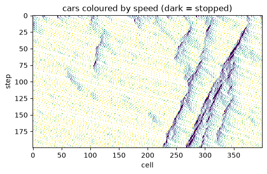
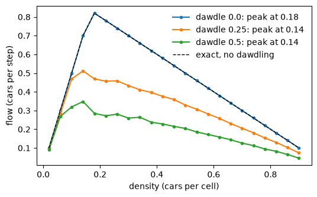

Transport: traffic jams from nothing#
Traffic engineers summarise a road by its fundamental diagram: the flow of cars (cars passing a point per unit time) against their density. This tutorial builds the Nagel-Schreckenberg model from the zoo, watches jams form without any accident or bottleneck, and measures the fundamental diagram.
Start your own project from it with modelly zoo copy nagel_schreckenberg my_traffic (the
same command in bash and PowerShell).
Build and run#
A ring road of 400 cells, 15% of them holding a car. Every step each car accelerates by one
up to the speed limit, brakes to the gap ahead, slows down by one with probability dawdle,
then moves.
import numpy as np
import matplotlib.pyplot as plt
from modelly.zoo.nagel_schreckenberg.model import (
NagelSchreckenberg,
TrafficScenario,
fundamental_diagram,
)
scenario = TrafficScenario(rng=7, length=400, density=0.15, dawdle=0.25, steps=200)
model = NagelSchreckenberg(scenario)
road = np.zeros((scenario.steps, scenario.length))
for t in range(scenario.steps):
model.step()
road[t, model.cars.position] = 1 + model.cars.velocity
model.datacollector.get_model_vars_dataframe().tail(3)
| flow | mean_speed | |
|---|---|---|
| 198 | 0.5225 | 3.483333 |
| 199 | 0.5275 | 3.516667 |
| 200 | 0.5325 | 3.550000 |
Plot: a space-time diagram#
Each row is the road at one step; dark cells are stopped cars. Jams appear on their own, from random dawdling amplified by braking, and travel backwards against the traffic.
fig, ax = plt.subplots(figsize=(6, 3.5))
ax.imshow(np.ma.masked_equal(road, 0), cmap="viridis", aspect="auto", interpolation="none")
ax.set_xlabel("cell")
ax.set_ylabel("step")
ax.set_title("cars coloured by speed (dark = stopped)");

Analysis: the fundamental diagram#
fundamental_diagram runs one model per density, discards a transient and averages the flow.
Without dawdling the flow is exactly min(density * max_speed, 1 - density), a triangle
peaking at the critical density 1 / (max_speed + 1). Dawdling lowers the capacity and moves
the peak to a lower density.
densities = np.linspace(0.02, 0.9, 23)
fig, ax = plt.subplots(figsize=(6, 3.5))
for dawdle in (0.0, 0.25, 0.5):
flows = fundamental_diagram(densities, 100, 100, rng=1, length=400, dawdle=dawdle)
peak = densities[int(np.argmax(flows))]
ax.plot(densities, flows, marker=".", label=f"dawdle {dawdle}: peak at {peak:.2f}")
ax.plot(densities, np.minimum(densities * 5, 1 - densities), "k--", lw=1, label="exact, no dawdling")
ax.set_xlabel("density (cars per cell)")
ax.set_ylabel("flow (cars per step)")
ax.legend(frameon=False);

Going further#
Give each car its own
max_speed(a column) to mix lorries and cars.Add a second lane and a lane-change rule.
Sweep
dawdlewithmodelly.batch.run_gridand plot the capacity (the peak flow).